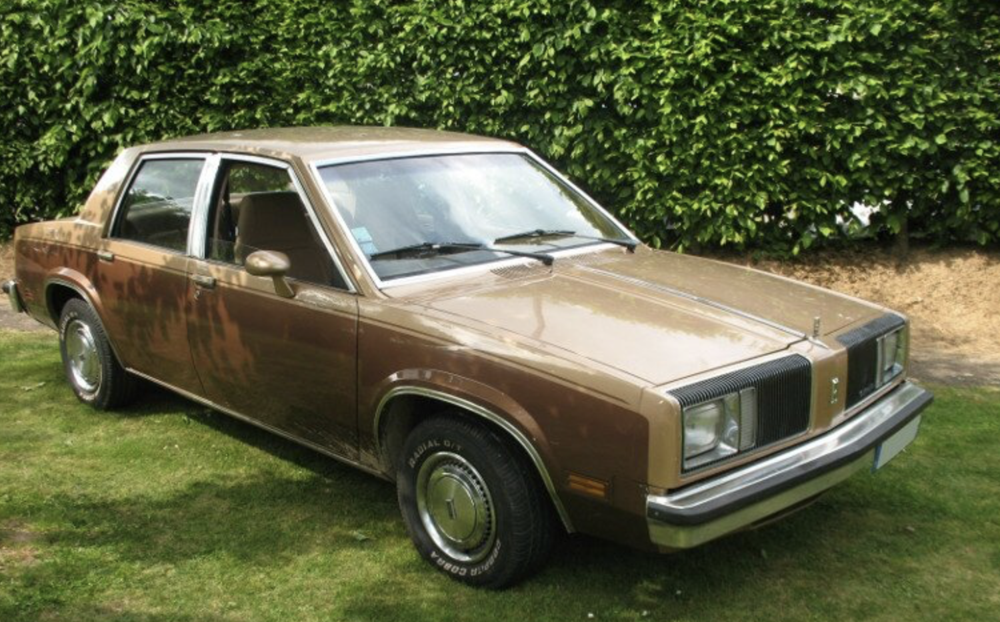

Als wir nach San Francisco gekommen waren, musste wir jeden Dollar zweimal umdrehen. Das änderte sich erst, als ich das Stipendium der Deutschen Krebshilfe erhielt und Denis mir zusätzlich noch ein Gehalt aus seinen amerikanischen Forschungsgeldern zahlte. Plötzlich mussten wir beim Einkaufen nicht mehr auf jeden Cent schauen. Zum ersten Mal hatten wir das Gefühl, uns auch einmal etwas leisten zu können.
Unser alter Ford – der "Hirsch" – machte uns diese Entscheidung leicht. Er sprang nur noch nach einem fest eingeübten Ritual an. Zunächst musste man ungefähr zwanzigmal beherzt aufs Gaspedal treten - bis es nach Benzin stank. Danach drehte man den Zündschlüssel und hoffte, dass inzwischen genügend Benzin im Vergaser angekommen war. Wenn der Motor trotzdem nur lustlos vor sich hin orgelte, half manchmal noch ein beherzter Schlag gegen den Magnetschalter des Anlassers. Mit etwas Glück erwachte der Hirsch dann doch noch zum Leben. Mit etwas Pech nicht.
Während der Fahrt entwickelte er weitere Eigenheiten. Gelegentlich fiel das Licht aus und sprach nach Sekunden wieder an. Das war gefährlich, selbst auf den breiten US-Highways.
Zur gleichen Zeit kündigten sich Hildes Geschwister Rudi und Uschi aus Deutschland an. Wir wollten ihnen Kalifornien zeigen und selbst endlich einmal eine größere Reise unternehmen, ohne ständig befürchten zu müssen, dass unser Auto irgendwo unterwegs seinen Geist aufgab. Also beschlossen wir, den Hirsch in den Ruhestand zu schicken und uns ein besseres Auto zu kaufen.
Ein paar Straßen weiter stand ein goldfarbener Oldsmobile Cutlass, Baujahr 1980, mit einem "For Sale"-Schild am Straßenrand. Sechs Jahre alt. Für deutsche Verhältnisse war das praktisch ein Neuwagen. Er sah gepflegt aus, kostete nicht viel und machte auf uns einen hervorragenden Eindruck. Wir vereinbarten einen Termin mit den Besitzern.

Sie wohnten oben am Hang des Sunset District. Ein älteres Ehepaar, russische Juden, die erst vor Kurzem in die USA eingewandert waren. Wahrscheinlich wussten sie sehr genau, weshalb sie dieses Auto verkaufen wollten. Wir fuhren gemeinsam mit unserem Hirsch hin. Hilde sollte ihn nach Hause fahren, ich wollte mit dem Oldsmobile folgen. Nach der Übergabe setzte sich Hilde in Bewegung. Ich startete den Oldsmobile und fuhr hinterher. Nach ungefähr einem Kilometer blieb das Auto stehen. Aus dem Auspuff schwarzer Qualm. Und dann war aus dem Oldsmobile plötzlich ein Oldmobile geworden. Nichts ging mehr. Ich blieb liegen.
Ich ging zurück zu den Besitzern und reklamierte den Schaden. Sie versprachen, sich darum zu kümmern. Wenige Tage später konnten wir den Oldsmobile wieder abholen. Er fuhr tatsächlich wieder. Allerdings hing jetzt hinter dem Auto eine dezente schwarze Rauchwolke. Die ehemaligen Besitzer meinten, man müsse wohl nur eon paar Schräubchen am Vergaser verstellen, dann würde es schon wieder werden. Also ging es weiter in die nächste Werkstatt. Dort wurde etwas herumgeschraubt und uns versichert, nun sei wirklich alles in Ordnung.
Kurz darauf trafen Rudi und Uschi ein. Rudi wollte unseren Hirsch ausprobieren. Ich erklärte ihm sorgfältig das Startprozedere mit Gaspedal, Zündschlüssel und etwas Geduld. Er machte alles genauso, wie ich es ihm erklärt hatte. Zwanzigmal Gas, bis es stinkt. Zündschlüssel drehen. Und dann machte es irgendwo tief im Motor nur noch „Rumms". Man hörte es bis hinauf in die Küche. Das war das Ende des Hirsches. Der Motor gab keinen Muckser mehr von sich.
Unser neues Auto war jetzt unser einziges Auto. Optimistisch bracghen wir zu unserer ersten größeren Reise auf. Unser Ziel war die nordkalifornische Küste. Mendocino! Die Melodie hatten wir bereits im Ohr. Über Santa Rosa, Geyserville, Cloverdale und Ukiah fuhren wir nach Willits. Von dort ging es durch die Berge hinüber zum Pazifik. Je steiler die Straße wurde, desto mehr ließ der Oldsmobile die Flügel hängen. Beim Bergauffahren verlor er zunehmend an Leistung. Im Rückspiegel erschien wieder diese fiese schwarze Rauchwolke. Als wir schließlich Fort Bragg erreichten, war endgültig Schluss. Motor kaputt. Nach gerade einer Woche. Unser schöner Urlaub war damit im Eimer.
Die Werkstatt erklärte uns, dass der Motor ausgetauscht werden müsse. Ein neuer Motor war für uns unbezahlbar. Der Mechaniker kratzte sich am Kopf und meinte schließlich, irgendwo auf dem Hof stehe noch ein gebrauchter Motor herum. Den könne man doch einbauen. Amerika war eben das Land pragmatischer Lösungen.
Also bekam unser Oldsmobile einen gebrauchten Motor unbekannter Herkunft implantiert. Während der Wagen operiert wurde, vertrieben wir uns die Zeit in der Gegend um Fort Bragg und Mendocino. Viel blieb uns ohnehin nicht übrig. Einige Tage später konnten wir unsere Reise fortsetzen und fuhren schließlich zurück nach San Francisco.
Damit war die Geschichte allerdings noch nicht zu Ende. Der gebrauchte Motor passte nämlich - wie sich rausstellte - nicht ganz zum Rest des Autos. Besonders deutlich zeigte sich das beim Ölpeilstab. Herausziehen ließ er sich problemlos. Hinein ging er aber nicht mehr.
Offenbar stimmte im Inneren des Motors irgendetwas nicht mehr ganz mit dem Verlauf des Führungsrohres überein. Jedes Messen des Ölstandes wurde zu einem kleinen technischen Experiment. Eines Tages wollte Hilde den Ölstand kontrollieren, zog den Peilstab heraus und bekam ihn nicht wieder hinein. Also fuhr sie zur nächsten Werkstatt. Die Mechaniker schauten sie freundlich an. Eine Frau, die den Ölpeilstab nicht mehr hineinbekam. Der Fall schien klar zu sein. Typisch Frau. Fährt das Auto und hat keine Ahnung, wie man den Ölpeilstab wieder in die Öffnung bekam! Dachten die Jungs.
Einer nahm den Stab in die Hand. Er bekam ihn ebenfalls nicht hinein. Dann kam der zweite. Dann der dritte. Die Stimmung änderte sich schlagartig. Sie meinten schließlich: Da muss ein neuer Motor rein. Von wegen, sagte Hilde. Da IST ein neuer Motor drin. Schließlich wurde der Peilstab mit Feile, Geduld und vermutlich auch etwas Gewalt bearbeitet, bis er sich wieder in den Motor schieben ließ. Von da an funktionierte das Ganze halbwegs. Jedenfalls meistens.
Der Oldsmobile brachte uns tatsächlich noch bis zum Ende unseres Amerikaaufenthaltes im Frühjahr 1987. Zuverlässig wurde er allerdings nie. Und jedes Mal, wenn ich den Ölstand kontrollierte, fragte ich mich, ob der Peilstab anschließend auch wieder den Weg zurückfinden würde. Rückblickend war unser alter Hirsch wahrscheinlich das ehrlichere Auto gewesen. Im Gegensatz zum Oldsmobile quasi ein Newmobile.